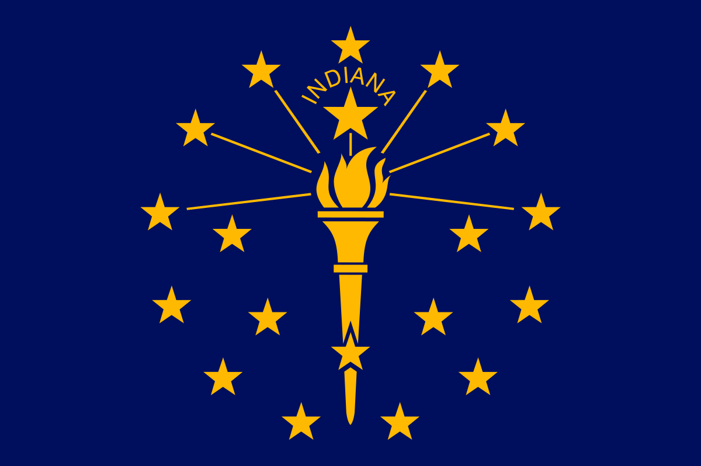

About Me
My name is Ginea and I am from Indianapolis, Indiana. I was born and raised here, although I have deep roots in Hawaii as well. I am currently working as a production assistent and office worker at an awards company. I have a dog named Le'a, which means joyful, and she brings much joy into my life. I love traveling and photography, also spending time with a good book.

Indiana

Indiana is a state in the Midwestern region of the United States. It borders Lake Michigan to the northwest, Michigan to the north and northeast, Ohio to the east, the Ohio River and Kentucky to the south and southeast, and the Wabash River and Illinois to the west. It is the 38th-largest by area and the 17th-most populous of the 50 States. Its capital and largest city is Indianapolis. Indiana was admitted to the United States as the 19th state on December 11, 1816.